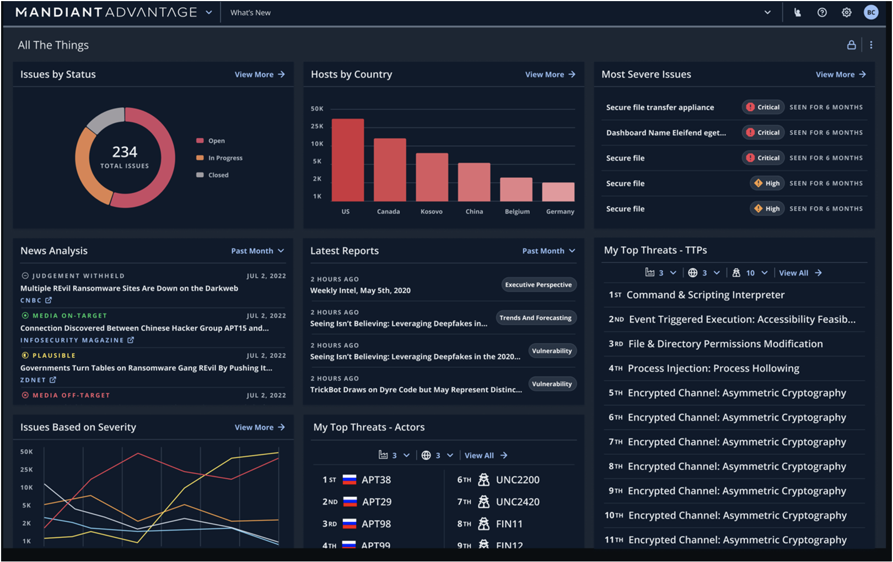

OpenSOC-AI
LLM-assisted SOC research for log analysis, threat extraction, MITRE ATT&CK mapping, and structured analyst output.
I build, break, and harden security systems across SOC detection, cloud security, application security, and open-source vulnerability research. MS Cybersecurity graduate from UAB with a 4.0 GPA, CompTIA Security+, Top 1% TryHackMe, and credited GitHub Security Advisories.
My strongest signal is the combination of SOC operations, security automation, cloud hardening, and responsible disclosure. I document findings clearly, reproduce issues safely, and translate technical risk into remediation steps.
SIEM dashboards, alert triage, log analysis, IDS tuning, MITRE ATT&CK mapping, and analyst-ready summaries.
AWS security reviews, IAM/S3 hardening, GuardDuty-style monitoring, and cloud log analysis workflows.
Patch diffing, PoC validation, path traversal, SSRF, authz issues, GHSA submissions, and remediation guidance.
OpenSOC-AI research, LLM-assisted SOC automation, structured threat extraction, and security-focused technical writing.
Led hands-on networking and security labs for 80+ students covering TCP/IP, Linux, packet analysis, network configuration, Wireshark, and troubleshooting workflows.
Built SIEM dashboards and alerting workflows, supported vulnerability remediation, and mapped security controls for ISO 27001, HITRUST, HIPAA, and SOC 2 readiness.
Deployed and tuned Snort/Suricata IDS rules, validated vulnerabilities with Kali Linux and Nmap, and improved alert fidelity through packet and traffic analysis.
Publicly visible advisory links are prioritized. Restricted GitHub Security Advisory links are included because they are part of the disclosure workflow, but visibility may depend on GitHub advisory permissions.
Reported a validation gap where special-use IPv4 ranges could be treated as public destinations in SSRF protection logic.
Reported read/write path traversal risk in file tools when caller-controlled paths escaped the intended workspace boundary.
Responsible disclosure tracked through GitHub Security Advisories. Public visibility may be restricted until publication.
Responsible disclosure and remediation-oriented reporting for workflow/file handling security boundary issues.
Co-authored arXiv:2604.26217, focused on parameter-efficient LLM log analysis, structured threat extraction, and SOC automation.
Placed 2nd as a team at the Southeast Cybersecurity Summit 2026 CTF and solved 27 of 29 challenges personally.
Evidence-first reports with clear summary, affected code, safe PoC, security impact, suggested fix, and regression test ideas.
LLM-assisted SOC research for log analysis, threat extraction, MITRE ATT&CK mapping, and structured analyst output.

Cloud posture review and security automation project for IAM, S3, logging, and practical AWS hardening workflows.

Patch-diffing, PoC reproduction, responsible disclosure writeups, and security advisory evidence packs.

Password security project exploring encryption, credential protection, and secure UI patterns.
Responsive GitHub Pages portfolio with clean UX, recruiter-facing copy, resume link, and advisory highlights.

Python/Bash workflows for security review, log analysis, evidence packaging, and repeatable triage.
Open to Cybersecurity Analyst, SOC Analyst, Security Engineer, Cloud Security, Vulnerability Management, and GRC-oriented roles.